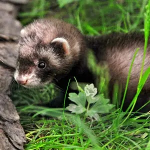
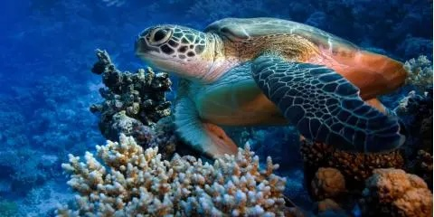
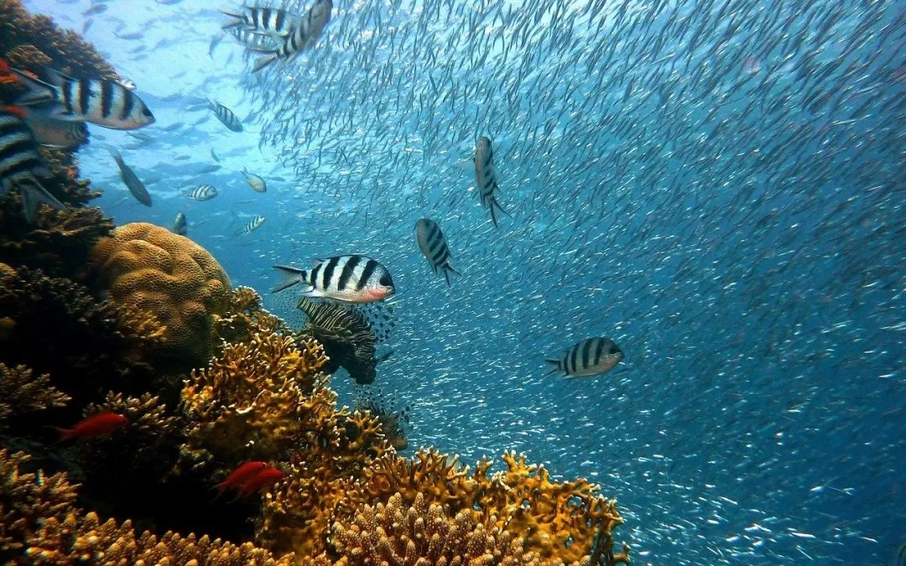

Welcome to my fan page! This site is dedicated to my favorite animals: the energetic ferret and the beautiful creatures of the coral reefs.
Species Bio
The domesticated ferret is a highly intelligent and social mammal. In the ocean, the Hawaiian Green Sea Turtle is one of the island's most fabled creatures, gifted with large flippers to sail gracefully through the depths.

Domesticated Ferret
Ferrets are playful, curious mammals known for their energy and ability to be trained as companions.

Hawaiian Green Sea Turtle
These turtles have unique heart-shaped shells and can reach speeds of up to 35 miles per hour in the water.

Kauai Coral Reefs
The coral reefs protect picturesque shores from waves and serve as a habitat for tropical fish like the Humuhumunukunukuapua'a.
Fun Facts
- Ferrets are very smart and social animals.
- Green sea turtles are an endangered species that poachers hunted in the early 20th century.
- Coral reefs provide a home for 25% of all marine life.